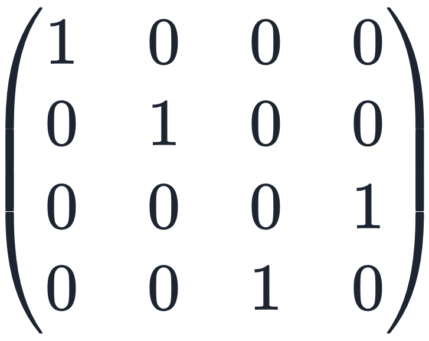
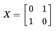
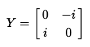
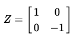
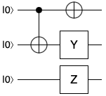

The CNOT (Controlled NOT) gate is an important building block for quantum computing. It acts on two qubits: a control qubit and a target qubit. If the control qubit is in the state "1", the CNOT gate will flip the state of the target qubit (from "0" to "1" or from "1" to "0"), but if the control qubit is in the state "0", the CNOT gate leaves the target qubit unchanged.
The Pauli X, Y, and Z gates are single-qubit gates that are commonly used in quantum computing.
Pauli X gate (also known as the NOT gate) flips the state of a qubit from "0" to "1" or from "1" to "0".
The Pauli Y and Z gates are used to rotate the state of a qubit around the Y and Z axes of the Bloch sphere, respectively.
Today, the CNOT gate and the Pauli gates form a universal set of gates, which means that any quantum operation can be constructed by using some combination of these gates. This is important because it means that any quantum algorithm can be implemented using these gates, which makes them an essential part of quantum computing.
